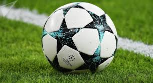

ΤΙ ΕΙΝΑΙ;
[Πάτα εδω για να πας στο αρχικό μενού!]

ΚΑΝΟΝΕΣ

[Πάτα εδω για να πας στο αρχικό μενού!]
Η μπάλα Σύμφωνα με τους Κανόνες Παιχνιδιού, η μπάλα πρέπει να έχει σφαιρικό σχήμα, να είναι κατασκευασμένη από δέρμα ή άλλο κατάλληλο υλικό και να έχει περιφέρεια το πολύ 70 εκατοστά και το λιγότερο 28 εκατοστά. Το βάρος της πρέπει να μην ξεπερνά τα 450 γραμμάρια και να μην είναι λιγότερο από 410 γραμμάρια κατά την έναρξη του αγώνα. Επιπρόσθετα, η πίεση στο εσωτερικό της μπάλας στο επίπεδο της θάλασσας πρέπει να είναι 0,6 με 1,1 ατμόσφαιρες. Αν κατά τη διάρκεια του αγώνα η μπάλα σκάσει ή καταστεί αντικανονική, ο αγώνας διακόπτεται και ξαναρχίζει με τη νέα μπάλα να τοποθετείται στο σημείο που η αρχική μπάλα κατέστη ελαττωματική, εκτός αν το παιχνίδι διακόπηκε μέσα στην περιοχή τέρματος, περίπτωση κατά την οποία ο διαιτητής αφήνει τη νέα μπάλα να πέσει στη γραμμή της περιοχής του τέρματος που είναι παράλληλη με τη γραμμή τέρματος στο πλησιέστερο σημείο όπου βρισκόταν η αρχική μπάλα όταν διακόπηκε το παιχνίδι («ελεύθερο του διαιτητή»). Εάν η μπάλα σκάσει ή καταστεί αντικανονική κατά τη διάρκεια ενός λακτίσματος πέναλτι ή ενός λακτίσματος από το σημείο πέναλτι καθώς κινείται εμπρός και πριν ακουμπήσει κάποιον παίκτη ή το δοκάρι ή το τέρμα, το λάκτισμα επαναλαμβάνεται. Αν η μπάλα σκάσει ή καταστεί αντικανονική σε διακοπή του αγώνα, σε εναρκτήριο λάκτισμα, από τέρματος λάκτισμα, γωνιακό λάκτισμα (κόρνερ), ελεύθερο λάκτισμα, λάκτισμα πέναλτι ή επαναφορά της μπάλας από τα πλάγια, ο αγώνας ξαναρχίζει ανάλογα με την περίπτωση. Δεν επιτρέπεται η αλλαγή της μπάλας κατά τη διάρκεια του αγώνα χωρίς την έγκριση του διαιτητή.
Ο αγωνιστικός χώρος διεξαγωγής του ποδοσφαίρου είναι γήπεδο σε σχήμα ορθογώνιου παραλληλόγραμμου (βλ. εικόνα), το οποίο χαράσσεται με λευκές γραμμές. Όλες οι γραμμές πρέπει να έχουν το ίδιο πλάτος, το οποίο δεν πρέπει να υπερβαίνει τα 12 εκατοστά, και θεωρείται ότι αποτελεί χώρο της περιοχής την οποία ορίζει κάθε γραμμή. Οι δύο μακρύτερες πλευρές του παραλληλογράμμου ονομάζονται πλάγιες γραμμές και οι δύο στενότερες γραμμές τέρματος. Για διεθνείς ποδοσφαιρικούς αγώνες ενηλίκων το μήκος της πλάγιας γραμμής πρέπει να κυμαίνεται από 100 μέχρι 110 μέτρα και η γραμμή τέρματος από 64 μέχρι 75 μέτρα. Για εθνικούς και άλλους μικρότερους ποδοσφαιρικούς αγώνες η πλάγια γραμμή μπορεί να έχει μήκος 90 έως 120 μέτρα και η γραμμή τέρματος από 45 έως 90 μέτρα, με την προϋπόθεση ότι το μήκος της πλάγιας γραμμής είναι πάντα μεγαλύτερο από το μήκος της γραμμής τέρματος και ο αγωνιστικός χώρος δεν γίνεται τετράγωνο.
ΙΣΤΟΡΙΑ

[Πάτα εδω για να πας στο αρχικό μενού!]
Οι Κανόνες του Κέμπριτζ, που καταρτίστηκαν για πρώτη φορά στο Πανεπιστήμιο του Κέμπριτζ το 1848, είχαν μεγάλη επιρροή στην ανάπτυξη των επόμενων κανόνων του ποδοσφαίρου. Οι Κανόνες του Κέμπριτζ γράφτηκαν στο Τρίνιτι Κόλετζ (Trinity College) του Κέμπριτζ σε μια συνεδρίαση στην οποία συμμετείχαν εκπρόσωποι από τα σχολεία Ίτον (Eaton College), Χάροου (Harrow School), Ράγκμπι (Rugby School),[7] Γουίντσεστερ (Winchester College) και Σριούσμπερι (Shrewsbury School). Δεν είχαν καθιερωθεί καθολικά, όπου δηλαδή παιζόταν το ποδόσφαιρο. Κατά τη διάρκεια της δεκαετίας του 1850, πολλές ομάδες που δεν συνδέονταν με σχολεία ή πανεπιστήμιο δημιουργήθηκαν σε όλο τον αγγλόφωνο κόσμο, για να παίζουν διάφορες μορφές του ποδοσφαίρου. Μερικές ομάδες δημιούργησαν τους δικούς τους ξεχωριστούς κανόνες, με χαρακτηριστικό παράδειγμα τη Σέφιλντ, που δημιουργήθηκε από πρώην μαθητές του δημόσιου σχολείου το 1857,[26] και που οδήγησε στη δημιουργία της Ποδοσφαιρικής Ομοσπονδίας του Σέφιλντ (Sheffield Football Association) το 1867[27] και των Κανόνων του Σέφιλντ. Το 1862, ο Τζον Τσαρλς Θρινκ (John Charles Thring), εκπαιδευτικός του σχολείου Uppingham School, επινόησε επίσης ένα σύνολο κανόνων, οι οποίοι αποκαλούνταν «The Simplest Game» ή «The Uppingham Rules»
 Οι συνεχιζόμενες αυτές προσπάθειες συνέβαλαν στη δημιουργία της Ποδοσφαιρικής Ομοσπονδίας της Αγγλίας (The Football Association - The FA) το 1863, η οποία συνεδρίασε για πρώτη φορά το πρωί της 26ης Οκτωβρίου του 1863 στην Ταβέρνα Freemasons (Freemasons' Tavern) στην Great Queen Street του Λονδίνου. Στη συνάντηση συμμετείχαν αντιπρόσωποι 12 ομάδων και σχολείων του Λονδίνου: Μπαρνές ΡΦΚ (Barnes Rugby Football Club), Σίβιλ Σερβάις ΦΚ (Civil Service F.C.), Κρουσάντερς ΦΚ (Crusaders F.C.), Φόρεστ οφ Λειτονστόουν (Forest of Leytonstone), Νόου Νέιμ Κλαπ (N.N. Club), Κρίσταλ Πάλας ΦΚ (1861) (Crystal Palace F.C. (1861)), Μπλάκχεθ ΦΚ (Blackheath F.C.), Κένσιγκτον Σκουλ (Kensington School), Πέρσεβαλ Χάους (Perceval House), Σούρμπιτον ΦΚ (Surbiton F.C.), Μπλάκχεθ Προπιέταρι Σκουλ (Blackheath Proprietary School) και Σάρτερχάους Σκουλ (Charterhouse School). Η συνάντηση στην ταβέρνα ήταν η απαρχή για πέντε ακόμα συναντήσεις μεταξύ Οκτωβρίου και Δεκεμβρίου, στο τέλος των οποίων παρήχθη το πρώτο ολοκληρωμένο σύνολο κανόνων. Στην τελευταία συνάντηση, ο πρώτος ταμίας της FA, ο εκπρόσωπος της ομάδας ράγκμπι Blackheath F.C., Φράνσις Μάουλε Κάμπελ (Francis Maule Campbell), απέσυρε την ομάδα του από την FA εξαιτίας της απόρριψης δύο προτάσεων. Η πρώτη επέτρεπε το τρέξιμο με την μπάλα στο χέρι και η δεύτερη επέτρεπε την παρεμπόδιση της ενέργειας αυτής με λάκτισμα στις κνήμες του αντιπάλου, τρικλοποδιά ή συγκράτηση με τα χέρια. Άλλες ποδοσφαιρικές ομάδες ράγκμπι ακολούθησαν και δεν εντάχθηκαν στην FA ή αποχώρησαν στη συνέχεια, δημιουργώντας το 1871 την Ένωση Ράγκμπι (Rugby Football Union). Τα υπόλοιπα έντεκα σωματεία, κάτω από την εποπτεία του Εμπενίζερ Κομπ Μόρλεϊ (Ebenezer Cobb Morley), ιδρυτή της Μπαρνές ΡΦΚ, επικύρωσαν τους αρχικούς δεκατρείς κανόνες του παιχνιδιού.Οι κανόνες αυτοί περιλάμβαναν το χειρισμό της μπάλας με «απόκρουση» και την απουσία οριζόντιου δοκαριού και έμοιαζαν εκπληκτικά με τους κανόνες του βικτωριανού ποδοσφαίρου που αναπτύσσονταν την ίδια περίοδο στην Αυστραλία. Η Ποδοσφαιρική Ομοσπονδία του Σέφιλντ διατηρούσε τους δικούς της κανόνες μέχρι τη δεκαετία του 1870 και η FA υιοθέτησε ορισμένους από τους κανόνες αυτές, μέχρι που υπήρχε μόνο μικρή διαφορά στα παιχνίδια.
Οι συνεχιζόμενες αυτές προσπάθειες συνέβαλαν στη δημιουργία της Ποδοσφαιρικής Ομοσπονδίας της Αγγλίας (The Football Association - The FA) το 1863, η οποία συνεδρίασε για πρώτη φορά το πρωί της 26ης Οκτωβρίου του 1863 στην Ταβέρνα Freemasons (Freemasons' Tavern) στην Great Queen Street του Λονδίνου. Στη συνάντηση συμμετείχαν αντιπρόσωποι 12 ομάδων και σχολείων του Λονδίνου: Μπαρνές ΡΦΚ (Barnes Rugby Football Club), Σίβιλ Σερβάις ΦΚ (Civil Service F.C.), Κρουσάντερς ΦΚ (Crusaders F.C.), Φόρεστ οφ Λειτονστόουν (Forest of Leytonstone), Νόου Νέιμ Κλαπ (N.N. Club), Κρίσταλ Πάλας ΦΚ (1861) (Crystal Palace F.C. (1861)), Μπλάκχεθ ΦΚ (Blackheath F.C.), Κένσιγκτον Σκουλ (Kensington School), Πέρσεβαλ Χάους (Perceval House), Σούρμπιτον ΦΚ (Surbiton F.C.), Μπλάκχεθ Προπιέταρι Σκουλ (Blackheath Proprietary School) και Σάρτερχάους Σκουλ (Charterhouse School). Η συνάντηση στην ταβέρνα ήταν η απαρχή για πέντε ακόμα συναντήσεις μεταξύ Οκτωβρίου και Δεκεμβρίου, στο τέλος των οποίων παρήχθη το πρώτο ολοκληρωμένο σύνολο κανόνων. Στην τελευταία συνάντηση, ο πρώτος ταμίας της FA, ο εκπρόσωπος της ομάδας ράγκμπι Blackheath F.C., Φράνσις Μάουλε Κάμπελ (Francis Maule Campbell), απέσυρε την ομάδα του από την FA εξαιτίας της απόρριψης δύο προτάσεων. Η πρώτη επέτρεπε το τρέξιμο με την μπάλα στο χέρι και η δεύτερη επέτρεπε την παρεμπόδιση της ενέργειας αυτής με λάκτισμα στις κνήμες του αντιπάλου, τρικλοποδιά ή συγκράτηση με τα χέρια. Άλλες ποδοσφαιρικές ομάδες ράγκμπι ακολούθησαν και δεν εντάχθηκαν στην FA ή αποχώρησαν στη συνέχεια, δημιουργώντας το 1871 την Ένωση Ράγκμπι (Rugby Football Union). Τα υπόλοιπα έντεκα σωματεία, κάτω από την εποπτεία του Εμπενίζερ Κομπ Μόρλεϊ (Ebenezer Cobb Morley), ιδρυτή της Μπαρνές ΡΦΚ, επικύρωσαν τους αρχικούς δεκατρείς κανόνες του παιχνιδιού.Οι κανόνες αυτοί περιλάμβαναν το χειρισμό της μπάλας με «απόκρουση» και την απουσία οριζόντιου δοκαριού και έμοιαζαν εκπληκτικά με τους κανόνες του βικτωριανού ποδοσφαίρου που αναπτύσσονταν την ίδια περίοδο στην Αυστραλία. Η Ποδοσφαιρική Ομοσπονδία του Σέφιλντ διατηρούσε τους δικούς της κανόνες μέχρι τη δεκαετία του 1870 και η FA υιοθέτησε ορισμένους από τους κανόνες αυτές, μέχρι που υπήρχε μόνο μικρή διαφορά στα παιχνίδια.
ΕΛΛΑΔΑ
[Πάτα εδω για να πας στο αρχικό μενού!]

Το πρώτο πρωτάθλημα στην Ελλάδα διοργανώθηκε το 1906, με συμμετοχή των Εθνικού Αθηνών, Πανελλήνιου και Πειραϊκού. Μέχρι το 1912 διοργανώνεται συνεχώς πρωτάθλημα με συμμετοχές πάντα από την Αττική, αφού η μετακίνηση από την επαρχία στην πρωτεύουσα την εποχή εκείνη ήταν πολύ δύσκολη. Λόγω έλλειψης στοιχείων δεν είναι διευκρινισμένο πλήρως αν διοργάνωσε όλα τα πρωταθλήματα ο ΣΕΓΑΣ ή κάποια από αυτά τα σωματεία. Το τελευταίο πρωτάθλημα του ΣΕΓΑΣ διοργανώθηκε το 1912. Μετά τους Βαλκανικούς πολέμους που επηρέασαν αρνητικά τις ομάδες, έγινε την περίοδο 1922-23 μια νέα προσπάθεια για διοργάνωση πανελλήνιου πρωταθλήματος με την δημιουργία της Ένωσης Ποδοσφαιρικών Σωματείων Ελλάδος (ΕΠΣΕ). Η νέα ένωση διοργάνωσε πρωτάθλημα για πρώτη φορά με συμμετοχή συλλόγων εκτός Αττικής, καθώς έλαβαν μέρος ομάδες από τη Θεσσαλονίκη.
ΚΟΣΜΟΣ
[Πάτα εδω για να πας στο αρχικό μενού!]
Η σημαντικότερη διεθνής ποδοσφαιρική διοργάνωση είναι το Παγκόσμιο Κύπελλο Ποδοσφαίρου (ή Μουντιάλ), το οποίο διοργανώνεται από τη ΦΙΦΑ. Η διοργάνωση λαμβάνει χώρα κάθε τέσσερα χρόνια. Περίπου 190-200 εθνικές ομάδες διαγωνίζονται στα προκριματικά της διοργάνωσης που τελούνται υπό την αιγίδα των ηπειρωτικών συνομοσπονδιών, για μια θέση στην τελική φάση της διοργάνωσης. Η τελική φάση, η οποία διεξάγεται κάθε τέσσερα χρόνια, περιλαμβάνει 32 εθνικές ομάδες που διαγωνίζονται για μια χρονική περίοδο περίπου ενός μηνός. Ο αριθμός των ομάδων που συμμετέχουν στην τελική φάση έχει αλλάξει στην διάρκεια της ιστορίας του θεσμού. Η πιο πρόσφατη αλλαγή έλαβε χώρα ενόψει του Παγκοσμίου Κυπέλλου Ποδοσφαίρου του 1998, όπου υπήρξε αύξηση του αριθμού των ομάδων από 24 σε 32. Το πιο πρόσφατο τουρνουά ήταν το Παγκόσμιο Κύπελλο Ποδοσφαίρου 2018, το οποίο διοργανώθηκε στη Ρωσία το διάστημα μεταξύ 14 Ιουνίου 2018 και 15 Ιουλίου 2018.
 Μετά το Παγκόσμιο κύπελλο, οι σημαντικότερες διεθνείς ποδοσφαιρικές διοργανώσεις είναι τα πρωταθλήματα των συνομοσπονδιών, τα οποία οργανώνονται από κάθε συνομοσπονδία και συμμετέχουν οι εθνικές ομάδες των μελών τους. Οι διοργανώσεις αυτές είναι το Ευρωπαϊκό πρωτάθλημα ποδοσφαίρου ή Euro (ΟΥΕΦΑ), το Κόπα Αμέρικα (CONMEBOL), το Κύπελλο Εθνών Αφρικής (CAF), το Ασιατικό Κύπελλο Εθνών Ποδοσφαίρου (AFC), το Χρυσό Κύπελλο CONCACAF (CONCACAF) και το Κύπελλο Εθνών Ωκεανίας (OFC). Στο Κύπελλο Συνομοσπονδιών ΦΙΦΑ συμμετέχουν οι νικητές των πιο πάνω διοργανώσεων, η εκάστοτε κάτοχος του Παγκοσμίου Κυπέλλου και η εθνική ομάδα του κράτους το οποίο διοργανώνει το Κύπελλο Συνομοσπονδιών. Το Κύπελλο Συνομοσπονδιών γενικά θεωρείται ως μια «προθέρμανση» για το επερχόμενο Παγκόσμιο Κύπελλο και δεν έχει την ίδια αίγλη με το τελευταίο. Οι πιο διάσημες διασυλλογικές διοργανώσεις είναι τα αντίστοιχα πρωταθλήματα κάθε συνομοσπονδίας, στα οποία γενικά συμμετέχουν οι πρωταθλητές κάθε κράτους (για παράδειγμα το ΟΥΕΦΑ Τσάμπιονς Λιγκ στην Ευρώπη και το Κόπα Λιμπερταδόρες στην Νότια Αμερική). Οι νικητές των διασυλλογικών διοργανώσεων κάθε συνομοσπονδίας έρχονται αντιμέτωπες μεταξύ τους στο πλαίσιο του Παγκοσμίου Κυπέλλου Συλλόγων, το οποίο διοργανώνει η ΦΙΦΑ.
Μετά το Παγκόσμιο κύπελλο, οι σημαντικότερες διεθνείς ποδοσφαιρικές διοργανώσεις είναι τα πρωταθλήματα των συνομοσπονδιών, τα οποία οργανώνονται από κάθε συνομοσπονδία και συμμετέχουν οι εθνικές ομάδες των μελών τους. Οι διοργανώσεις αυτές είναι το Ευρωπαϊκό πρωτάθλημα ποδοσφαίρου ή Euro (ΟΥΕΦΑ), το Κόπα Αμέρικα (CONMEBOL), το Κύπελλο Εθνών Αφρικής (CAF), το Ασιατικό Κύπελλο Εθνών Ποδοσφαίρου (AFC), το Χρυσό Κύπελλο CONCACAF (CONCACAF) και το Κύπελλο Εθνών Ωκεανίας (OFC). Στο Κύπελλο Συνομοσπονδιών ΦΙΦΑ συμμετέχουν οι νικητές των πιο πάνω διοργανώσεων, η εκάστοτε κάτοχος του Παγκοσμίου Κυπέλλου και η εθνική ομάδα του κράτους το οποίο διοργανώνει το Κύπελλο Συνομοσπονδιών. Το Κύπελλο Συνομοσπονδιών γενικά θεωρείται ως μια «προθέρμανση» για το επερχόμενο Παγκόσμιο Κύπελλο και δεν έχει την ίδια αίγλη με το τελευταίο. Οι πιο διάσημες διασυλλογικές διοργανώσεις είναι τα αντίστοιχα πρωταθλήματα κάθε συνομοσπονδίας, στα οποία γενικά συμμετέχουν οι πρωταθλητές κάθε κράτους (για παράδειγμα το ΟΥΕΦΑ Τσάμπιονς Λιγκ στην Ευρώπη και το Κόπα Λιμπερταδόρες στην Νότια Αμερική). Οι νικητές των διασυλλογικών διοργανώσεων κάθε συνομοσπονδίας έρχονται αντιμέτωπες μεταξύ τους στο πλαίσιο του Παγκοσμίου Κυπέλλου Συλλόγων, το οποίο διοργανώνει η ΦΙΦΑ.